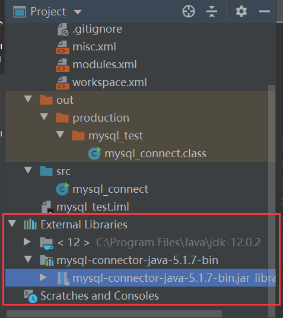

大四老狗又想起来自己已经很久没学习了【快去学习！！！】。
Windows下安装MySQL 之前都是在linux环境下使用mysql(mariadb)或者sqlite，现在由于是在windows环境上实验，于是要先安装win版本的mysql。
1. 安装 双击运行mysql-5.5.37-win32.msi。
选择安装类型“Custom”。
在“Developer Components（开发者部分）”上左键单击，选择“This feature,
and all subfeatures, will be installed on local hard drive.”，即“此部分，及下属子部分内容，全部安装在本地硬盘上”。在上面的“MySQL Server（mysql服务器）”、“Client Programs（mysql客户端程序）”、“Documentation（文档）”也如此操作，以保证安装所有文件。点选“Change…”，手动指定安装目录。
安装完成后出现成功界面。
点击Finish，之后弹出MySQL配置向导。
2. 配置
选择配置方式。
选择服务器类型。
选择MySQL数据库的大致用途。
选择数据库位置。
选择网站并发连接数。
选择是否启用TCP/IP连接。
设置数据库语言编码。
设置windows服务和环境变量。
设置用户名和密码。
完成！
查看服务，发现MySQL服务已启用。
3. 使用 打开命令行，输入mysql.exe -u root -p，之后输入密码，成功进入mysql。
为了之后的连接查询，我们先新建一个数据表stu，再插入一些数据。
1 2 3 4 5 6 7 8 9 10 11 12 13 14 15 16 17 18 19 20 21 22 23 24 25 26 27 28 29 30 31 32 33 34 35 36 37 38 39 40 41 42 43 44 45 46 47 48 49 50 51 52 53 54 55 56 mysql> show databases; +--------------------+ | Database | +--------------------+ | information_schema | | mysql | | performance_schema | | test | +--------------------+ 4 rows in set (0.00 sec) mysql> use test; Database changed mysql> show tables; Empty set (0.00 sec) mysql> CREATE TABLE stu( -> sid int PRIMARY KEY, -> sname varchar(20), -> sage int, -> major varchar(50) -> ); Query OK, 0 rows affected (0.05 sec) mysql> show tables; +----------------+ | Tables_in_test | +----------------+ | stu | +----------------+ 1 row in set (0.00 sec) mysql> INSERT INTO stu VALUES(1001,'zhangsan',20,'java'); Query OK, 1 row affected (0.03 sec) mysql> INSERT INTO stu VALUES(1002,'lisi',20,'c++'); Query OK, 1 row affected (0.04 sec) mysql> INSERT INTO stu VALUES(1003,'wangwu',20,'java'); Query OK, 1 row affected (0.07 sec) mysql> INSERT INTO stu VALUES(1004,'zhaoliu',20,'python'); Query OK, 1 row affected (0.03 sec) mysql> SELECT * FROM stu; +------+----------+------+--------+ | sid | sname | sage | major | +------+----------+------+--------+ | 1001 | zhangsan | 20 | java | | 1002 | lisi | 20 | c++ | | 1003 | wangwu | 20 | java | | 1004 | zhaoliu | 20 | python | +------+----------+------+--------+ 4 rows in set (0.00 sec) mysql>
到此，MySQL的配置完成。
在IDEA中使用Java连接MySQL 1. 导入jar包 要连接mysql，需要加载mysql-cconnector-java包。在IDEA中，jar包的导入方法是File->Project Structure->Modules->Dependencies，点击右侧加号进行导入。
然后就可以在项目列表里的libraries中看到导入后的jar包了。

2. 调用类、访问mysql 具体代码如下：
1 2 3 4 5 6 7 8 9 10 11 12 13 14 15 16 17 18 19 20 21 22 23 24 25 26 import java.sql.Connection;import java.sql.DriverManager;import java.sql.PreparedStatement;import java.sql.ResultSet;import java.sql.SQLException;public class mysql_connect public static void main (String[] args) try { Class.forName("com.mysql.jdbc.Driver" ); Connection conn = DriverManager.getConnection("jdbc:mysql://localhost:3306/test" , "root" , "123456" ); System.out.println(conn); PreparedStatement ps = conn.prepareStatement("select * from stu" ); ResultSet rs = ps.executeQuery(); while (rs.next()) { System.out.println(rs.getInt("sid" )+" " +rs.getString("sname" )); } } catch (ClassNotFoundException e) { e.printStackTrace(); } catch (SQLException e) { e.printStackTrace(); } } }
右键运行，结果如下：
和SELECT * FROM stu;的结果一致，连接成功！